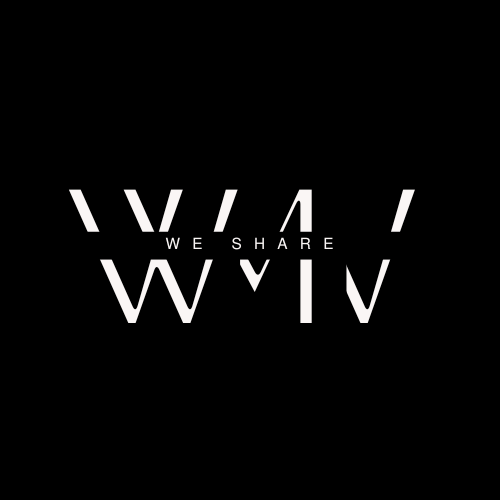

<div style="text-align:right;"><div>
<div style="text-align:center;padding-top: 20px;">
<a style="padding-right: 40px;color: black;" href="index.html">Home</a>
<a style="padding-right: 40px;color: black;" href="Authors.html">Authors</a>
<a style="padding-right: 40px;color: black;" href="About.html">About us</a>
<a style="padding-right: 40px;color: black;" href="wavebooks.html">Wave books</a>
<a style="padding-right: 40px;color: black;" href="https://docs.google.com/forms/d/1XSf1l0JXRsQP4OkZlxrDUnyoMnFG9FnrAMxw50I8XWI/edit">Contest</a>
<div>
<h1 style="font-size:30px;text-align:center;color: white;background-color: Black;">Join the Wave: Your Journey Starts Here with Wave Manuscript!<h1>
<h2>MISSION</h2>
<p style="font-size:15px;align:center;color: black;padding-right: 200px;padding-left: 200px;">At Wave Manuscript, our mission is to empower writers worldwide by providing them with a supportive platform to share their stories, amplify their voices, and connect with readers on a global scale. We aim to foster creativity, encourage diversity, and inspire innovation in the world of literature.</p>
<h2>VISION</h2>
<p style="font-size:15px;align:center;color: black;padding-right: 200px;padding-left: 200px;">Our vision is to become a leading force in the publishing industry, known for our commitment to excellence, passion for storytelling, and dedication to supporting emerging and established authors alike. We envision a future where every writer feels valued, every story finds its audience, and every reader discovers their next literary adventure through Wave Manuscript.
</p>
<h2>PUBLISHING GENRES</h2>
<p style="font-size:15px;align:center;color: black;padding-right: 200px;padding-left: 200px;">Wave Manuscript embraces a wide range of genres to cater to diverse tastes and preferences. From gripping thrillers to heartwarming romances, captivating adventures to fantastical fantasies, we welcome submissions across various genres, including but not limited to:

Drama
Adventure
Sci-Fi
Thriller
Fable
Fairy Tale
Fantasy
Fiction
Folklore
Historical Fiction
We believe in the power of storytelling to transport readers to new worlds, challenge perspectives, and evoke powerful emotions, regardless of genre.</p>
<h2>ACCEPTANCES</h2>
<p style="font-size:15px;align:center;color: black;padding-right: 200px;padding-left: 200px;">Wave Manuscript is committed to fostering a culture of inclusivity and diversity in literature. We welcome submissions from writers of all backgrounds, cultures, and experiences. Our team of editors carefully reviews each manuscript with an open mind, seeking out compelling stories, unique voices, and fresh perspectives. While we strive to maintain high standards of quality, we believe in giving every writer a fair chance to shine.</p>
<h2>BREACH</h2>
<p style="font-size:15px;align:center;color: red;padding-right: 200px;padding-left: 200px;">We take breaches of our submission guidelines and community standards seriously. Any form of plagiarism, hate speech, or inappropriate content will not be tolerated. Our priority is to create a safe and respectful environment for writers to express themselves and for readers to engage with their work. In the event of a breach, appropriate action will be taken, which may include rejection of submissions, removal of content, and, in severe cases, termination of membership.

<h2>ADDITIONAL SUPPORT</h2>
<p style="font-size:15px;align:center;color: black;padding-right: 200px;padding-left: 200px;">At Wave Manuscript, we're not just a publishing business – we're a literary family united by our love for storytelling and our commitment to nurturing talent. Join us on this incredible journey, where every word has the power to make waves.
In addition to publishing your work, Wave Manuscript offers a range of support services to help writers succeed. From manuscript evaluations and editing assistance to marketing and promotion guidance, we're here to support you at every stage of your writing journey. Our goal is not only to publish your book but also to help you build a sustainable and fulfilling career as an author.</p>

<h2>JOIN US</h2>
<p style="font-size:15px;align:center;padding-right: 200px;padding-left: 200px;color: black;">Ready to make waves with your writing? Join the Wave Manuscript community today! Submit your manuscript, connect with fellow writers, and embark on an exciting literary adventure with us. Whether you're a seasoned author or a budding storyteller, there's a place for you here.</p>
<a href="">JOIN US</a>